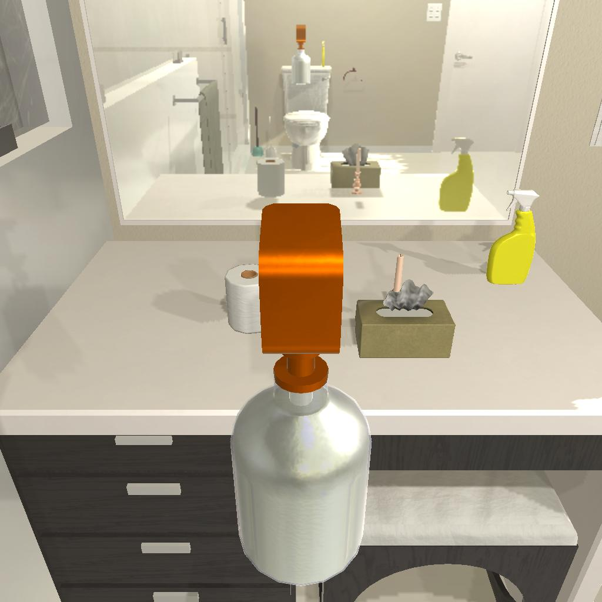

---------------------------------------------------------task: 28---------------------------------------------------------
--------------------------------------------------------------------------------------------------------------------------------------------------------------------
--------------------------------------------------------------------------------------------------------------------------------------------------------------------
Step:--------------------------------------------------------------------------13-------------------------------------------------------------------------------
----------------------------------------
VLM Prompt:
**Task**
Please perform as an embodied AI agent. Our final objective is to find two spraybottle and put them in toilet. Below is the plan for completing the task, the current observation, alongside historical data and admissible actions for the next step. Please determine the best action for the next step!
**Plan**
Below is a detailed step-by-step plan to complete the task.
1. Find a spray bottle.
2. Pick up the spray bottle.
3. Locate the toilet.
4. Place the picked-up spray bottle in the toilet.
5. Find another spray bottle.
6. Pick up the second spray bottle.
7. Return to the toilet.
8. Place the second picked-up spray bottle in the toilet with the first one.
**Current Observation**
Displayed is an image capturing the current position of the agent.
Objects in The Image: ['bathroom mirror', 'sink', 'faucet', 'toilet paper roll', 'soap dispenser', 'candle with holder', 'spray bottle']
**History Information**
Displayed are the previous observations with their corresponding actions.
State 0:
No history.
State 1:
1. Step Index in the Plan: 1
2. Objects: Toilet, Spray Bottle (on top of the toilet tank)
3. Action: go to toilet 1
State 2:
1. Step Index in the Plan: 2
2. Objects: Toilet, Toilet Tank, Soap Dispenser, Window Blinds, Wall, Spray Bottle
3. Action: take soapbottle 1 from toilet 1
State 3:
1. Step Index in the Plan: 4
2. Objects: Lamp, Window, Blinds, Power Outlet, Wall, Table, Incorrectly Picked-up Soapbottle
3. Action: put soapbottle 1 in/on toilet 1
State 4:
1. Step Index in the Plan: 5
2. Objects: Toilet, Toilet Paper Roll, Toilet Paper Holder, Soap Dispenser (mistaken for spray bottle)
3. Action: go to cart 1
State 5:
1. Step Index in the Plan: 5
2. Objects: Cart, Bottles with Pumps (potential spray bottles)
3. Action: take spraybottle 1 from cart 1
State 6:
1. Step Index in the Plan: 5
2. Objects: Spray Bottle, Dish Rack, Sink
3. Action: examine spraybottle 1
State 7:
1. Step Index in the Plan: 6
2. Objects: Spray Bottle, Dish Rack, Sink
3. Action: go to toilet 1
State 8:
1. Step Index in the Plan: 4
2. Objects: Spray Bottle, Soap Dispenser
3. Action: put spraybottle 1 in/on toilet 1
State 9:
2. Step Index in the Plan: Next after placing one spray bottle
3. Objects: Toilet, Toilet Paper Holder, Spray Bottle, Soap Dispenser, Shower Door
3. Action: take spray bottle from toilet
State 10:
1. Step Index in the Plan: 5
2. Objects: Spray Bottle, White Box, Window with Frosted Glass
3. Action: examine soapbottle 1
State 11:
1. Step Index in the Plan: 5
2. Objects: Spray Bottle, Towel Dispenser, Mirror
3. Action: go to cart 1
State 12:
1. Step Index in the Plan: Last completed step was placing one spray bottle in the toilet.
2. Objects: Spray Bottle, Toilet
3. Action: go to cart 1
State 13:
2. Step Index in the Plan: 5
3. Objects: Sink, Dish Soap Bottle, Sponge, Dish Rack
4. Action: go to drawer 1
**Admissible Actions**
(1): go to bathtub 1
(2): go to bathtubbasin 1
(3): go to sink 1
(4): go to garbagecan 1
(5): go to sinkbasin 1
(6): go to countertop 1
(7): go to drawer 2
(8): go to drawer 3
(9): go to drawer 4
(10): go to toilet 1
(11): go to toiletpaperhanger 1
(12): open drawer 1
(13): close drawer 1
(14): put soapbottle 1 in/on drawer 1
(15): examine soapbottle 1
**Analysis Guideline**
1. Analyze the history and current observation, and then determine our current step in the plan and our current place.
2. List all visible objects related to the task in the current observation, without summarizing any as "various items."
3. Analyze the objects in the current observation based on the history and the requirements for the current step, and then determine if we can complete the step with the current observation.
4. Analyze and decide on the most appropriate action to take.
5. Summarize the analysis using the following format: "Analysis: [The summarization of the analysis], The Most Appropriate Action: (i which is the integer.): [Selected action]"
**Notes**
1. We must complete each step of the plan in order and cannot skip steps when the previous ones are not finished.
2. For "Go to" actions listed as "go to xxx [n]", interpret this as there are n distinct actions available: "go to xxx 1", "go to xxx 2", ..., "go to xxx n". Select one specific action from these options instead of using "go to xxx [n]".
3. If receptacles such as drawers, cabinets, and so forth are closed in the current observation, we may try to open them.
4. Pay attention to synonyms and ensure clarity in the terms used.
5. We must determine and provide the single action which must be in the **Admissible Actions**.
6. If there is no history available, we are at the first step and the current place is "Unknown".
**Answer**
Please select the most suitable action by following the **Analysis Guideline**, keeping the above **Notes** in mind.
----------------------------------------
----------------------------------------
VLM Response:
Analysis: The current step in the plan appears to be step 5, which is to find another spray bottle. Based on the historical data, the agent has already placed one spray bottle in the toilet and is now in search of the second one. In the current observation, we can see one spray bottle on the countertop to the right. Since this is the object we are looking for, we can proceed with the next step in the plan, which is to pick up the second spray bottle. However, there is no "pick up" action in the admissible actions. Instead, we have actions to go to various locations in the bathroom. Since we cannot directly interact with the spray bottle, the next best action is to move closer to the spray bottle for future interaction. The closest action that would allow us to do that is to go to the countertop where the spray bottle is located.
The Most Appropriate Action: (6): go to countertop 1
----------------------------------------
----------------------------------------
>>> Refine VLM Response and Get Pure Action: go to countertop 1
----------------------------------------
-----------------------------------------------------------------
Running time: 13.504347801208496 seconds
Total Money: 0
-----------------------------------------------------------------
-----------------------------------------------------------------
Summarization Prompt:
**Context**
Analysis: Since there is no history information, we are at the first step in the plan, which is to find a statue. The current place is unknown. In the current observation, we see a floorlamp next to an armchair with a small table that has a small object on it, which could potentially be the statue we are looking for. Since the plan requires us to find a statue first and it appears there might be one on the table next to the armchair, we should investigate this object to determine if it is the statue we need.
The Most Appropriate Action: (1): go to armchair 1
**Summary**
1. Step Index in the Plan: 1
2. Objects: Floorlamp, Armchair, Small Table, Small Object (potential statue)
3. Action: go to armchair 1
**Context**
Analysis: The current step in the plan appears to be step 5, which is to find another spray bottle. Based on the historical data, the agent has already placed one spray bottle in the toilet and is now in search of the second one. In the current observation, we can see one spray bottle on the countertop to the right. Since this is the object we are looking for, we can proceed with the next step in the plan, which is to pick up the second spray bottle. However, there is no "pick up" action in the admissible actions. Instead, we have actions to go to various locations in the bathroom. Since we cannot directly interact with the spray bottle, the next best action is to move closer to the spray bottle for future interaction. The closest action that would allow us to do that is to go to the countertop where the spray bottle is located.
The Most Appropriate Action: (6): go to countertop 1
Please summarize the context by following above examples when providing the summary, and ensure that only the summary is included, without any extra explanation.
**Summary**
-----------------------------------------------------------------
-----------------------------------------------------------------
Summarization Response:
1. Step Index in the Plan: 5
2. Objects: Spray Bottle, Countertop
3. Action: go to countertop 1
-----------------------------------------------------------------
-----------------------------------------------------------------
Text Observation:You arrive at loc 6. On the countertop 1, you see a tissuebox 3, a spraybottle 3, a toiletpaper 2, a handtowel 1, and a candle 1.
-----------------------------------------------------------------
UNSUCCEED